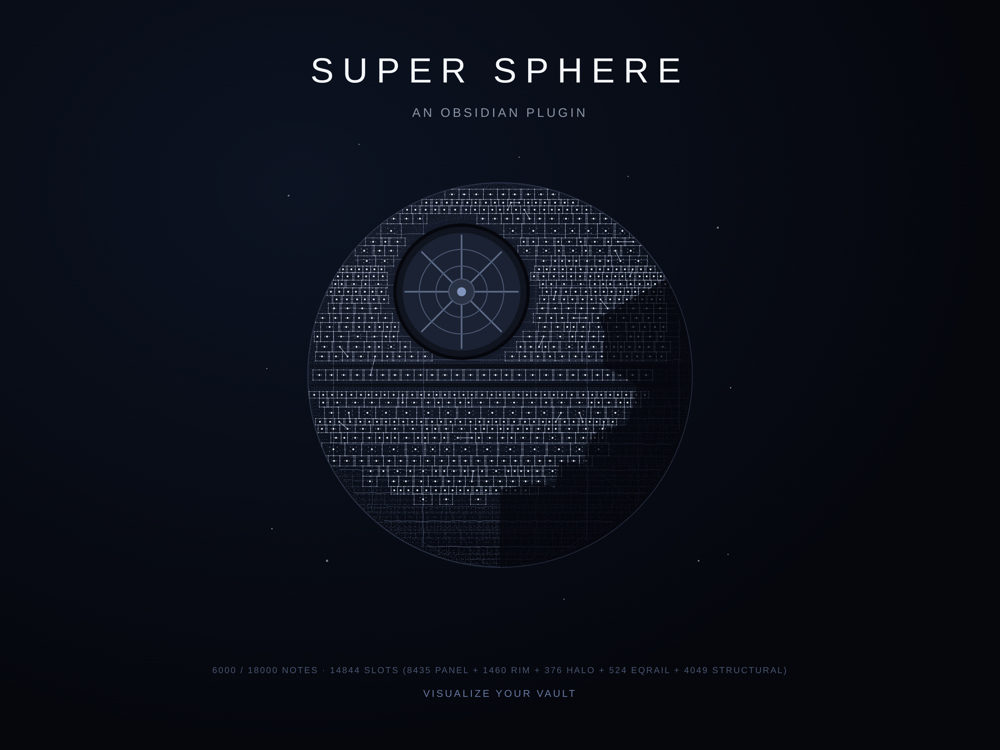
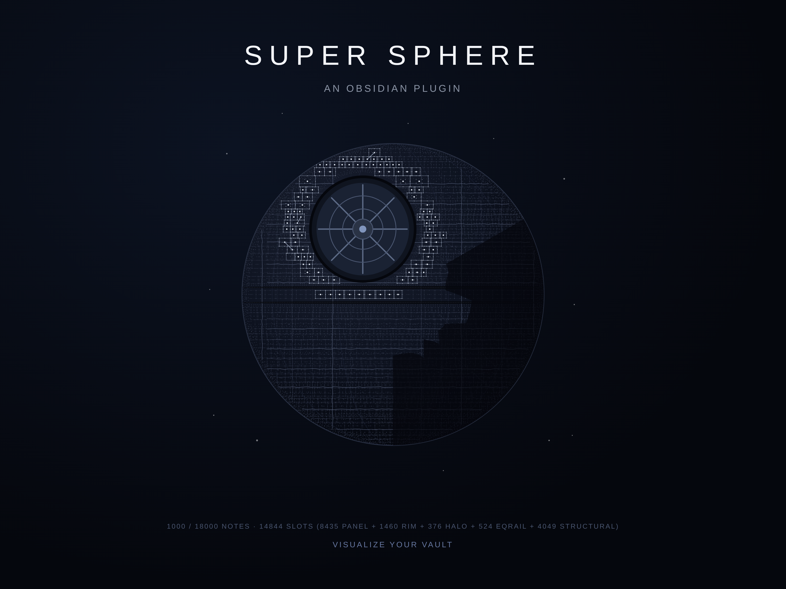
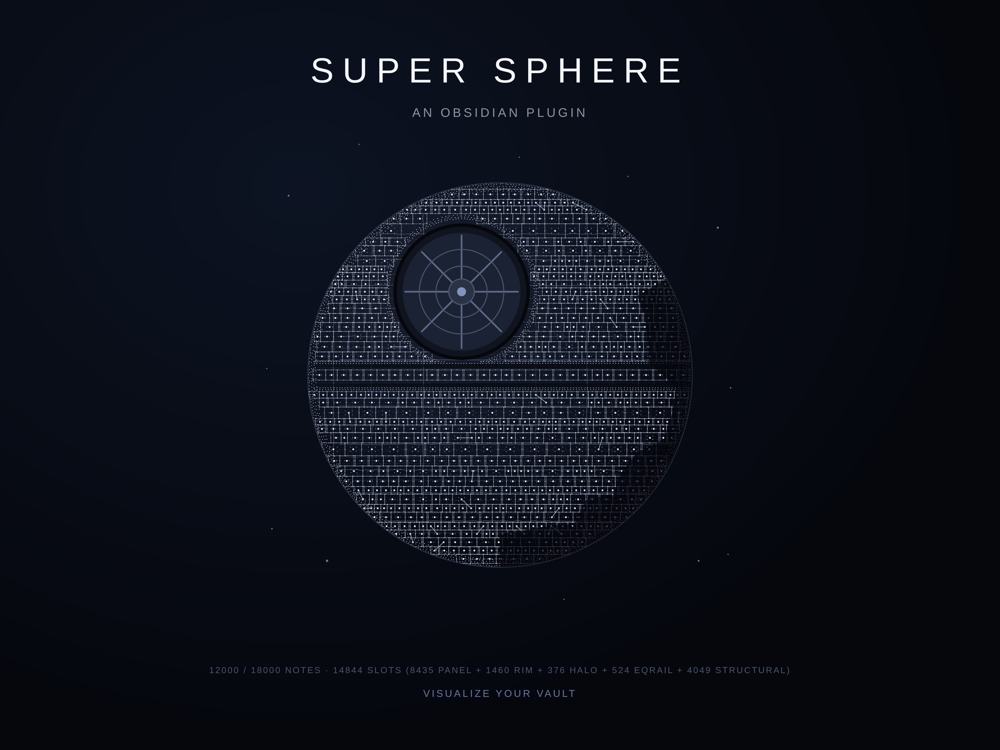
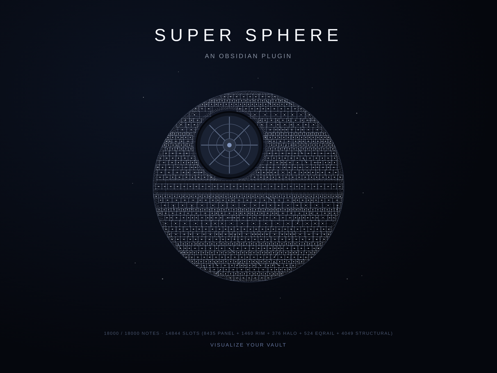

Super Sphere — An Obsidian Plugin
Turn every note into a construction slot on a colossal procedural megastructure.
$2.99 — one-time
Buy Now — $2.99
Your vault, built like a moon.
Super Sphere renders your entire Obsidian vault as a single procedurally generated sphere — a Death-Star-scale megastructure that slowly builds itself as you write. Every note you create lights up one more slot on the surface: panel corners, interior dots, scaffolding laths, equator rails, focal-eye halo, outer rim. The sphere begins as a tight crescent of detail around the focal dish and expands outward in an organic, hand-built-looking construction wave.
18,000 notes = your Super Sphere is complete.
That's the promise. The crescent shadow fades away, the outer rim locks in smooth, the equator bands close up, and the structure reads as a finished planetary disc. Most writers will never hit this ceiling — but every note between 1 and 18,000 adds visible detail you can watch accumulate.
Hit 18,000 and keep going? The sphere keeps rewarding you. Quiet interior subdivisions begin filling in every panel with finer grain detail, so 25,000-note vaults look meaningfully denser than 20,000-note vaults, and 50,000 looks denser still. Think of it as a contest with yourself. Or with the friend you recommended the plugin to.
Forced-dark rendering. The sphere ignores your Obsidian theme and renders in a hand-tuned dark palette so it always looks like deep space, regardless of whether you live in Solarized Light or Things Dark.
Deterministic seed. Your sphere is unique to your seed and grows the same way every time. Close Obsidian and reopen — you pick up exactly where you left off.
One-time purchase. $2.99. Lifetime license for the current major version. No subscription, no telemetry, no account required beyond entering your license key once. License is revalidated online every 7 days; a 14-day offline grace period keeps it working when you're disconnected.
Screenshots



What You Get
main.js,manifest.json,styles.css— drop into.obsidian/plugins/super-sphere/- A license key delivered to your purchase email
- Activation via Obsidian Settings → Super Sphere → paste key → Activate
- Free updates within the 0.x plugin series
Requirements
- Obsidian desktop or mobile, v1.5.0 or higher
- A vault (any size — the sphere starts drawing from note #1)
License Terms
One license per user. Personal use on all of your own devices. The license covers the current major version of the plugin and all point releases within it. Future major versions may require a separate purchase.
No refunds after download, due to the digital nature of the product.